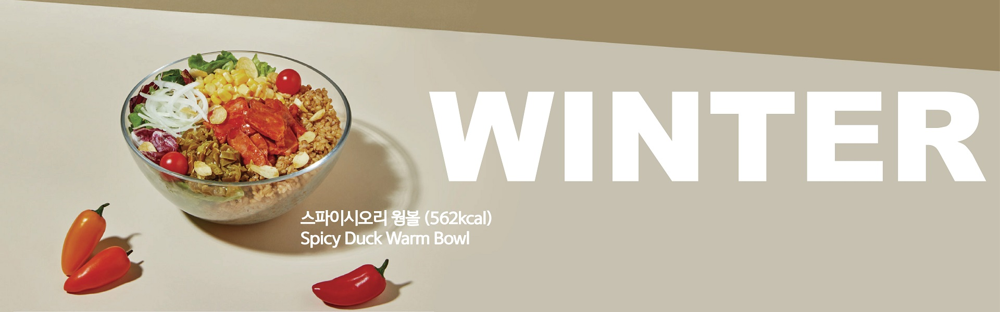
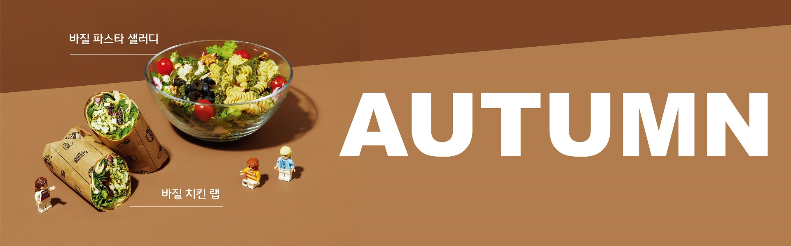
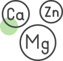

-
균형
샐러디는 3대 영양소인 탄수화물, 단백질, 지방의 적절한 분배와 균형을 추구합니다. 개개인의 식습관에 따라 구성 비율이 다양한 메뉴들을 선택할 수 있습니다.
-
더하기
일반적인 식습관을 가진 대부분의 사람들은 비타민, 무기질, 식이섬유 섭취가 부족합니다. 샐러디의 다양한 채소와 토핑들은 부족한 영양소를 더하는 데 도움을 줍니다.
-
빼기
샐러디의 메뉴들은 다른 일반적인 음식 대비 당, 포화지방, 나트륨 함량이 적습니다. 빼야 할 영양소는 줄이고, 맛과 품질을 유지하는 레시피 개선을 지속합니다.
-

영양성분표
샐러디 전체 메뉴의 영양성분표입니다. 본인의 식습관과 식단을 고려하여 알맞은 메뉴를 선택하고 부족한 영양소는 토핑 추가 등을 통해 보완하세요.
영양성분표 보기 -
칼로리 계산하기
샐러디 전체 메뉴의 칼로리를 계산할 수 있는 기능입니다.
칼로리 계산하기 -
칼로리표
보편적인 성인 권장 일일 칼로리는 남성 2700kcal, 여성 2000kcal입니다. 본인에게 맞는 열량을 확인하고 다른 끼니의 열량을 고려하여 메뉴를 선택하세요.
칼로리표 보기 -
알레르기 정보
특정 음식에 대해 알레르기가 있으신 고객분께서는 메뉴 선택 전에 알레르기 정보를 꼭 확인하시기 바랍니다.
알레르기 정보 보기